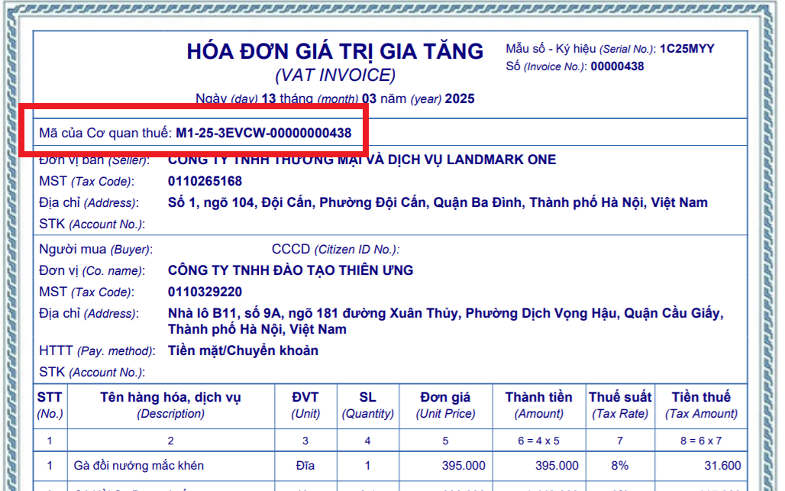
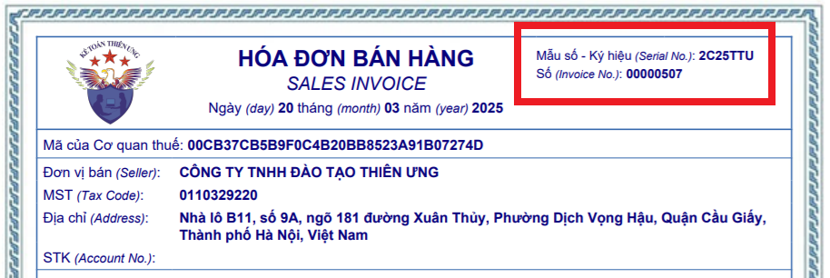

Hóa đơn điện tử có mã của cơ quan thuế là gì? Đối tượng sử dụng hóa đơn điện có mã của cơ quan thuế; Điều kiện sử dụng hóa đơn điện tử Không có mã của cơ quan thuế.
I. Hóa đơn điện tử có mã và không có mã của cơ quan thuế là gì:
Căn cứ theo Điều 3 Nghị định 123/2020/NĐ-CP đã được sửa đổi bổ sung tại Khoản 2 Điều 1 Nghị định 70/2025/NĐ-CP có hiệu lực từ ngày 01/06/2025 thì:
1. Hóa đơn là chứng từ kế toán do tổ chức, cá nhân bán hàng hóa, cung cấp dịch vụ lập, ghi nhận thông tin bán hàng hóa, cung cấp dịch vụ. Hóa đơn được thể hiện theo hình thức hóa đơn điện tử hoặc hóa đơn do cơ quan thuế đặt in.
2. Hóa đơn điện tử là hóa đơn có mã hoặc không có mã của cơ quan thuế được thể hiện ở dạng dữ liệu điện tử do tổ chức, cá nhân bán hàng hóa, cung cấp dịch vụ lập bằng phương tiện điện tử để ghi nhận thông tin bán hàng hóa, cung cấp dịch vụ theo quy định của pháp luật về kế toán, pháp luật về thuế, bao gồm cả trường hợp hóa đơn được khởi tạo từ máy tính tiền có kết nối chuyển dữ liệu điện tử với cơ quan thuế, trong đó:
a) Hóa đơn điện tử có mã của cơ quan thuế là hóa đơn điện tử được cơ quan thuế cấp mã trước khi tổ chức, cá nhân bán hàng hóa, cung cấp dịch vụ gửi cho người mua.
Mã của cơ quan thuế trên hóa đơn điện tử bao gồm số giao dịch là một dãy số duy nhất do hệ thống của cơ quan thuế tạo ra và một chuỗi ký tự được cơ quan thuế mã hóa dựa trên thông tin của người bán lập trên hóa đơn.
b) Hóa đơn điện tử không có mã của cơ quan thuế là hóa đơn điện tử do tổ chức bán hàng hóa, cung cấp dịch vụ gửi cho người mua không có mã của cơ quan thuế.
c) Hóa đơn điện tử khởi tạo từ máy tính tiền có kết nối chuyển dữ liệu điện tử với cơ quan thuế (sau đây gọi là hóa đơn điện tử khởi tạo từ máy tính tiền) là hóa đơn có mã của cơ quan thuế hoặc dữ liệu điện tử để người mua có thể truy xuất, kê khai thông tin hóa đơn điện tử khởi tạo từ máy tính tiền do tổ chức, cá nhân bán hàng hóa, cung cấp dịch vụ lập từ hệ thống tính tiền, dữ liệu được chuyển đến cơ quan thuế theo định dạng được quy định tại Điều 12 Nghị định này.
d) Máy tính tiền là hệ thống tính tiền bao gồm một thiết bị điện tử đồng bộ hoặc một hệ thống gồm nhiều thiết bị điện tử được kết hợp với nhau bằng giải pháp công nghệ thông tin có chức năng chung như: tính tiền, lưu trữ các giao dịch bán hàng, số liệu bán hàng.

Theo điều 5 của thông tư 32/2025/TT-BTC hướng dẫn về Ký hiệu mẫu số, ký hiệu hóa đơn, tên liên hóa đơn thì:
Ký hiệu hóa đơn điện tử là nhóm 6 ký tự gồm cả chữ viết và chữ số thể hiện ký hiệu hóa đơn điện tử để phản ánh các thông tin về loại hóa đơn điện tử có mã của cơ quan thuế hoặc hóa đơn điện tử không có mã, năm lập hóa đơn, loại hóa đơn điện tử được sử dụng. Sáu (06) ký tự này được quy định như sau:
- Ký tự đầu tiên là một (01) chữ cái được quy định là C hoặc K như sau: C thể hiện hóa đơn điện tử có mã của cơ quan thuế, K thể hiện hóa đơn điện tử không có mã;
Ví dụ thể hiện các ký tự của ký hiệu mẫu hóa đơn điện tử và ký hiệu hóa đơn điện tử:
+ “1C25TAA” - là hóa đơn giá trị gia tăng có mã của cơ quan thuế được lập năm 2025 và là hóa đơn điện tử do doanh nghiệp, tổ chức đăng ký sử dụng với cơ quan thuế;
+ “2C25TBB” - là hóa đơn bán hàng có mã của cơ quan thuế được lập năm 2025 và là hóa đơn điện tử do doanh nghiệp, tổ chức, hộ kinh doanh, cá nhân kinh doanh đăng ký sử dụng với cơ quan thuế;
+ “1C25LBB” - là hóa đơn giá trị gia tăng có mã của cơ quan thuế được lập năm 2025 và là hóa đơn điện tử của cơ quan thuế cấp theo từng lần phát sinh;
+ “1K25TYY” - là hóa đơn giá trị gia tăng loại không có mã được lập năm 2025 và là hóa đơn điện tử do doanh nghiệp, tổ chức đăng ký sử dụng với cơ quan thuế;
+ “1K25DAA” - là hóa đơn giá trị gia tăng loại không có mã được lập năm 2025 và là hóa đơn điện tử đặc thù không nhất thiết phải có một số tiêu thức bắt buộc do các doanh nghiệp, tổ chức đăng ký sử dụng;
+ “6K25NAB” - là phiếu xuất kho kiêm vận chuyển nội bộ điện tử loại không có mã được lập năm 2025 do doanh nghiệp đăng ký với cơ quan thuế;
+ “6K25BAB” - là phiếu xuất kho hàng gửi bán đại lý điện tử loại không có mã được lập năm 2025 do doanh nghiệp đăng ký với cơ quan thuế;
+ “7K25XAB” - là hóa đơn thương mại điện tử được lập năm 2025 do doanh nghiệp đăng ký với cơ quan thuế.
Ví dụ cụ thể:
Giải thích cụ thể:

Giải thích cụ thể:
- Mẫu số: 2 -> Là loại hóa đơn bán hàng (Nếu Mẫu số 1 là loại hóa đơn GTGT)
- C nghĩa là loại hóa đơn có mã của cơ quan thuế;
- 25 nghĩa là hóa đơn này được lập vào năm 2025;
- T nghĩa là loại hóa đơn điện tử do Doanh nghiệp đăng ký sử dụng với cơ quan thuế;
- TU nghĩa là DN tự xác định theo nhu cầu quản lý (ở đây Công ty Diệu Tâm lấy tên viết tắt của DN là "TU").
- C nghĩa là loại hóa đơn có mã của cơ quan thuế;
- 25 nghĩa là hóa đơn này được lập vào năm 2025;
- T nghĩa là loại hóa đơn điện tử do Doanh nghiệp đăng ký sử dụng với cơ quan thuế;
- TU nghĩa là DN tự xác định theo nhu cầu quản lý (ở đây Công ty Diệu Tâm lấy tên viết tắt của DN là "TU").
--------------------------------------------------------------------
Xem thêm: Các loại hóa đơn điện tử.
==========================
II. Trách nhiệm của người bán hàng hóa, cung cấp dịch vụ sử dụng hóa đơn điện tử có mã của cơ quan thuế
Theo điều 21 của Nghị định số 123/2020/NĐ-CP thì:
Theo điều 21 của Nghị định số 123/2020/NĐ-CP thì:
1. Quản lý tên và mật khẩu của các tài khoản đã được cơ quan thuế cấp.
2. Tạo lập hóa đơn điện tử về bán hàng hóa, cung cấp dịch vụ để gửi đến cơ quan thuế cấp mã và chịu trách nhiệm trước pháp luật về tính hợp pháp, chính xác của hóa đơn điện tử.
3. Gửi hóa đơn điện tử có mã của cơ quan thuế đến người mua ngay sau khi nhận được hóa đơn điện tử có mã của cơ quan thuế.
Đối tượng sử dụng hoá đơn điện tử có mã của cơ quan thuế thì các bạn xem chi tiết tại đây: Đối tượng sử dụng hóa đơn điện tử có mã của cơ quan thuế
--------------------------------------------------------------------
III. Trách nhiệm của người bán hàng hóa, cung cấp dịch vụ sử dụng hóa đơn điện tử không có mã của cơ quan thuế
Theo điều 21 của Nghị định số 123/2020/NĐ-CP được sửa đổi bởi Khoản 14 Điều 1 Nghị định 70/2025/NĐ-CP có hiệu lực từ ngày 01/06/2025 thì:
1. Quản lý tên và mật khẩu của các tài khoản đã được cơ quan thuế cấp.
2. Tạo lập hóa đơn điện tử về bán hàng hóa, cung cấp dịch vụ để gửi đến người mua, cơ quan thuế, tổ chức cung cấp dịch vụ hóa đơn điện tử và chịu trách nhiệm trước pháp luật về tính hợp pháp, chính xác của hóa đơn điện tử đã lập.
3. Chuyển dữ liệu hóa đơn điện tử không có mã của cơ quan thuế đã lập đến cơ quan thuế qua Cổng thông tin điện tử của Tổng cục Thuế (chuyển trực tiếp hoặc gửi qua tổ chức cung cấp dịch vụ hóa đơn điện tử).
a) Phương thức và thời điểm chuyển dữ liệu hóa đơn điện tử
a.1) Phương thức chuyển dữ liệu hóa đơn điện tử theo bảng tổng hợp dữ liệu hóa đơn điện tử theo Mẫu số 01/TH-HĐĐT Phụ lục IA ban hành kèm theo Nghị định này đối với các trường hợp sau:
a.1.1) Cung cấp dịch vụ thuộc lĩnh vực: bưu chính viễn thông, bảo hiểm, tài chính ngân hàng, vận tải hàng không, chứng khoán.
a.1.2) Bán hàng hóa là điện, nước nếu có thông tin về mã khách hàng hoặc mã số thuế của khách hàng.
a.1.3) Bán hàng hóa, cung cấp dịch vụ của nhà cung cấp ở nước ngoài không có cơ sở thường trú tại Việt Nam hoạt động thương mại điện tử, kinh doanh dựa trên nền tảng số và các dịch vụ khác tại Việt Nam.
Người bán lập bảng tổng hợp dữ liệu hóa đơn điện tử hàng hóa, cung cấp dịch vụ phát sinh trong tháng hoặc quý (tính từ ngày đầu của tháng, quý đến ngày cuối cùng của tháng hoặc quý) theo Mẫu số 01/TH-HĐĐT Phụ lục IA ban hành kèm theo Nghị định này để gửi cơ quan thuế chậm nhất là thời hạn gửi Tờ khai thuế giá trị gia tăng theo quy định của Luật Quản lý thuế số 38/2019/QH14 và các văn bản hướng dẫn thi hành.
Trường hợp phát sinh số lượng hóa đơn lớn thì bảng tổng hợp sẽ được tách theo định dạng chuẩn dữ liệu của cơ quan thuế nhằm đảm bảo yêu cầu gửi, nhận dữ liệu trên đường truyền.
Đối với hóa đơn gửi theo bảng tổng hợp thì người bán gửi thông tin hủy, điều chỉnh trực tiếp trên bảng tổng hợp của các kỳ tiếp theo mà không gửi thông báo hóa đơn điện tử đã lập sai theo Mẫu số 04/SS-HĐĐT Phụ lục IA ban hành kèm theo Nghị định này đến cơ quan thuế.
Các hóa đơn được lập cho tổng doanh thu của người mua là cá nhân không kinh doanh phát sinh trong ngày hoặc tháng theo bảng kê chi tiết thì người bán chỉ gửi dữ liệu hóa đơn điện tử (không kèm bảng kê chi tiết) đến cơ quan thuế.
a.2) Xử lý bảng tổng hợp dữ liệu hóa đơn điện tử đã gửi cơ quan thuế:
Trường hợp dữ liệu hóa đơn điện tử tại bảng tổng hợp dữ liệu hóa đơn điện tử đã gửi cơ quan thuế thiếu hoặc sai thì người bán gửi bảng tổng hợp dữ liệu hóa đơn điện tử bổ sung;
Việc điều chỉnh dữ liệu hóa đơn trên bảng tổng hợp dữ liệu hóa đơn phải điền đủ các thông tin: ký hiệu mẫu số hóa đơn, ký hiệu hóa đơn, số hóa đơn vào cột 14 “thông tin hóa đơn liên quan” tại Mẫu số 01/TH-HĐĐT Phụ lục IA ban hành kèm theo Nghị định này (trừ trường hợp hóa đơn điện tử không nhất thiết phải có đầy đủ các thông tin ký hiệu mẫu số hóa đơn, ký hiệu hóa đơn, số hóa đơn theo quy định tại khoản 14 Điều 10 Nghị định này).
a.3) Phương thức chuyển đầy đủ nội dung hóa đơn áp dụng đối với trường hợp bán hàng hóa, cung cấp dịch vụ không thuộc quy định tại điểm a1 khoản này.
Người bán sau khi lập đầy đủ các nội dung trên hóa đơn theo quy định gửi hóa đơn cho người mua và đồng thời gửi hóa đơn cho cơ quan thuế chậm nhất là ngày làm việc tiếp theo kể từ thời điểm lập hóa đơn.
b) Doanh nghiệp, tổ chức kinh tế thực hiện chuyển dữ liệu hóa đơn điện tử đến cơ quan thuế theo định dạng dữ liệu theo quy định tại Điều 12 Nghị định này và hướng dẫn của Tổng cục Thuế bằng hình thức gửi trực tiếp (đối với trường hợp đáp ứng yêu cầu về chuẩn kết nối dữ liệu) hoặc gửi thông qua tổ chức cung cấp dịch vụ hóa đơn điện tử.
b.1) Hình thức gửi trực tiếp
Trường hợp người bán là doanh nghiệp, tổ chức kinh tế đáp ứng điều kiện dưới đây thì người bán thực hiện chuyển dữ liệu hóa đơn điện tử đến cơ quan thuế theo định dạng dữ liệu theo quy định tại Điều 12 Nghị định này và hướng dẫn của Tổng cục Thuế bằng hình thức gửi trực tiếp:
b.1.1) Doanh nghiệp, tổ chức kinh tế sử dụng hóa đơn bình quân từ 1.000.000 hóa đơn một tháng trở lên (tính theo số lượng hóa đơn bình quân năm trước liền kề), có hệ thống công nghệ thông tin đáp ứng yêu cầu về định dạng chuẩn dữ liệu và quy định tại khoản 4 Điều 12 Nghị định này, có nhu cầu chuyển dữ liệu hóa đơn điện tử theo hình thức gửi trực tiếp đến cơ quan thuế gửi văn bản kèm theo tài liệu chứng minh điều kiện đáp ứng đến Tổng cục Thuế.
b.1.2) Doanh nghiệp, tổ chức kinh tế có tổ chức mô hình Công ty mẹ - con, có xây dựng hệ thống quản lý dữ liệu hóa đơn tập trung tại Công ty mẹ và có nhu cầu Công ty mẹ chuyển toàn bộ dữ liệu hóa đơn điện tử bao gồm cả dữ liệu của các công ty con đến cơ quan thuế qua Cổng thông tin điện tử của Tổng cục Thuế thì gửi kèm theo danh sách công ty con đến Tổng cục Thuế để thực hiện kết nối kỹ thuật.
b.2) Hình thức gửi thông qua tổ chức cung cấp dịch vụ hóa đơn điện tử
Các doanh nghiệp, tổ chức kinh tế không thuộc trường hợp nêu tại điểm a khoản này thực hiện ký hợp đồng với tổ chức cung cấp dịch vụ hóa đơn điện tử để tổ chức cung cấp dịch vụ hóa đơn điện tử làm dịch vụ chuyển dữ liệu hóa đơn điện tử đến cơ quan thuế.
4. Lưu trữ và bảo đảm tính toàn vẹn của toàn bộ hóa đơn điện tử; thực hiện các quy định pháp luật về bảo đảm an toàn, an ninh hệ thống dữ liệu điện tử.
5. Chấp hành sự thanh tra, kiểm tra, đối chiếu của cơ quan thuế và các cơ quan có thẩm quyền theo quy định của pháp luật.
Đối tượng sử dụng hoá đơn điện tử không có mã của cơ quan thuế thì các bạn xem chi tiết tại đây: Đối tượng sử dụng hóa đơn điện tử không có mã của cơ quan thuế
===========================================
===========================================
IV. Quyền và nghĩa vụ của tổ chức, cá nhân bán hàng hóa, cung cấp dịch vụ
Theo điều 55 của Nghị định số 123/2020/NĐ-CP thì:
Theo điều 55 của Nghị định số 123/2020/NĐ-CP thì:
1. Tổ chức, cá nhân bán hàng hóa, cung cấp dịch vụ có quyền:
a) Tạo hóa đơn điện tử không có mã của cơ quan thuế để sử dụng nếu đáp ứng các yêu cầu theo quy định tại khoản 2 Điều 91 Luật Quản lý thuế số 38/2019/QH14;
b) Sử dụng hóa đơn điện tử có mã của cơ quan thuế nếu thuộc trường hợp và đối tượng quy định tại khoản 1, 3, 4 Điều 91 Luật Quản lý thuế số 38/2019/QH14;
c) Sử dụng hóa đơn do cơ quan thuế đặt in theo quy định tại Điều 24 Nghị định này;
d) Sử dụng hóa đơn hợp pháp để phục vụ cho các hoạt động kinh doanh;
đ) Khiếu kiện các tổ chức, cá nhân có hành vi xâm phạm các quyền tạo, phát hành và sử dụng hóa đơn hợp pháp.
2. Tổ chức, cá nhân bán hàng hóa, cung cấp dịch vụ có nghĩa vụ:
a) Lập và giao hóa đơn khi bán hàng hóa, cung cấp dịch vụ cho khách hàng;
b) Quản lý các hoạt động tạo hóa đơn theo quy định tại Nghị định này;
c) Đăng ký sử dụng hóa đơn điện tử theo Điều 15 Nghị định này nếu sử dụng hóa đơn điện tử và chuyển dữ liệu hóa đơn điện tử đến cơ quan thuế trong trường hợp sử dụng hóa đơn điện tử không có mã của cơ quan thuế theo quy định tại Điều 22 Nghị định này;
d) Công khai cách thức tra cứu, nhận file gốc hóa đơn điện tử của người bán tới người mua hàng hóa, dịch vụ;
đ) Báo cáo việc sử dụng hóa đơn cho cơ quan thuế quản lý trực tiếp trong trường hợp mua hóa đơn của cơ quan thuế theo Mẫu số BC26/HĐG Phụ lục IA ban hành kèm theo Nghị định này;
e) Gửi gửi dữ liệu hóa đơn đến cơ quan thuế đối với trường hợp mua hóa đơn của cơ quan thuế theo Mẫu số 01/TH-HĐĐT Phụ lục IA ban hành kèm theo Nghị định này cùng với việc nộp tờ khai thuế giá trị gia tăng.
===========================
----------------------------------------------------------
Xem thêm: Hướng dẫn xuất hóa đơn điện tử.
==============================================
V. Quyền và trách nhiệm của người mua hàng hóa, dịch vụ
Theo Khoản 36 Điều 1 Nghị định 70/2025/NĐ-CP Sửa đổi tên Điều 56 và sửa đổi, bổ sung Điều 56 của Nghị định số 123/2020/NĐ-CP thì:
1. Người mua hàng hóa, dịch vụ có quyền:
a) Yêu cầu người bán lập và giao hóa đơn khi mua hàng hóa, dịch vụ.
b) Cung cấp chính xác thông tin cần thiết để người bán lập hóa đơn.
c) Ký các liên hóa đơn đã ghi đầy đủ nội dung trong trường hợp các bên có thỏa thuận về việc người mua ký trên hóa đơn.
d) Tra cứu, nhận file gốc hóa đơn điện tử của người bán.
đ) Sử dụng hóa đơn hợp pháp theo quy định pháp luật cho các hoạt động kinh doanh; để chứng minh quyền sử dụng, quyền sở hữu hàng hóa, dịch vụ; xổ số hoặc được bồi thường thiệt hại theo quy định của pháp luật; được dùng để hạch toán kế toán hoạt động mua hàng hóa, dịch vụ theo quy định của pháp luật về kế toán; kê khai các loại thuế; đăng ký quyền sử dụng, quyền sở hữu và để kê khai thanh toán vốn ngân sách nhà nước theo các quy định của pháp luật. Hóa đơn dùng cho mục đích này phải là hóa đơn có thông tin xác định được người mua.
2. Người mua hàng hóa, dịch vụ có trách nhiệm:
a) Sử dụng hóa đơn đúng mục đích.
b) Cung cấp thông tin trên hóa đơn cho các cơ quan có thẩm quyền khi được yêu cầu, trường hợp sử dụng hóa đơn do cơ quan thuế đặt in thì phải cung cấp hóa đơn bản gốc, trường hợp sử dụng hóa đơn điện tử thì thực hiện quy định về việc tra cứu, cung cấp, sử dụng thông tin hóa đơn điện tử.
----------------------------------------------------------
---------------------------------------------------------------------
Kế toán Diệu Tâm chúc các bạn thành công!
Kế toán Diệu Tâm chúc các bạn thành công!
--------------------------------------------------------------------
Chi tiết xem thêm: Các loại hóa đơn điện tử.